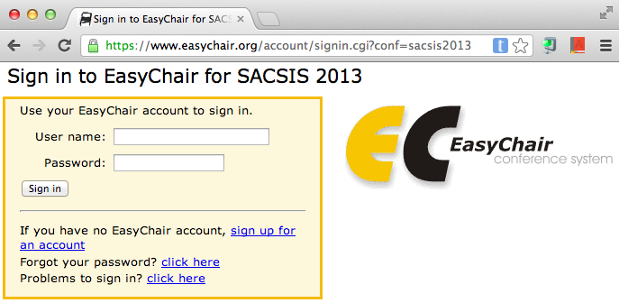
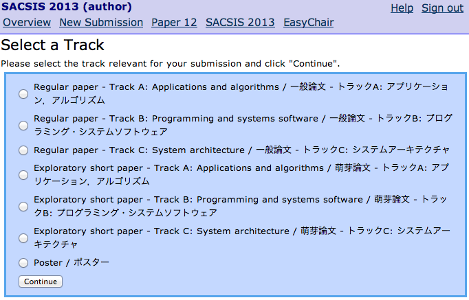
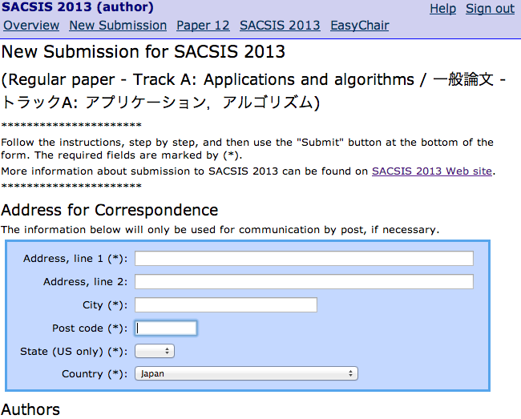
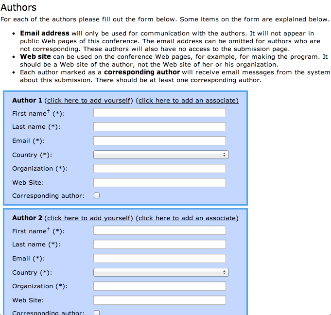
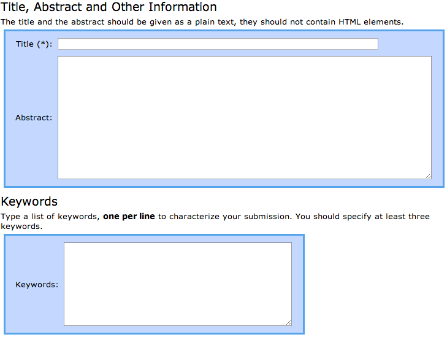
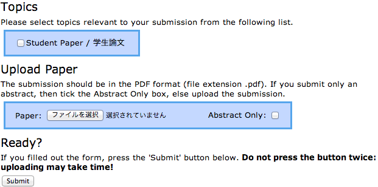

SACSIS2013 論文投稿方法
SACSIS2013では，論文投稿システムとしてEasyChairを利用します．EasyChairを利用したことがある場合には，
1. EasyChairのアカウント作成手順
- SACSIS2013 EasyChairサイトへアクセスしてください．
- "sign up for an account"をクリックしてください．
- "Step 1"で表示されている2つの単語を入力し，"continue"をクリックしてください．
- "Step 2"でFirst name, Last name, Emailアドレスを入力し，"continue"をクリックしてください．
- "Account Application Received"と出力され，仮手続が完了します．
- Step 2で登録したEmailアドレスにEasyChairシステムから"EasyChair account confirmation"という件名のメールが送られてきます．本文中のURLをクリックしてください．
- "Signing Up for EasyChair: Last Step"と出力された画面で，User name (EasyChairシステムにログインする際に利用する)，所属，パスワード等の情報を入力し，"create my account"をクリックしてください．
2. SACSIS2013への論文投稿手順
- SACSIS2013 EasyChairサイト:
https://www.easychair.org/conferences/?conf=sacsis2013
へアクセスしてください． - User name，Passwordを入力して，"Sign in"をクリックしてください．

- 上部メニューの"New Submission"をクリックしてください．
- 投稿するトラック名にチェックを入れて，"Continue"をクリックしてください．一般論文，萌芽論文は別のトラックになります．トラック名をよく確認してください．

- 連絡先を入力してください．このページでは，論文が日本語で書かれている場合は日本語で，英語の場合は英語で入力してください．

- 著者全員の情報を入力してください．代表者には，"Corresponding author"にチェックを入れてください．なお，論文が日本語で書かれている場合は日本語で，英語の場合は英語で入力してください． 入力欄が足りない場合は，"Click here to add more authors"をクリックしてください．

- 論文タイトル、概要、キーワードを入力してください．論文が日本語で書かれている場合は日本語で，英語の場合は英語で入力してください．

- 学生論文の場合は，"Student Paper / 学生論文"に忘れずにチェックを入れてください．

- 論文登録のみを行う場合は，"Abstract Only"にチェックを入れてください． 論文も同時にアップロードする場合は，PDF形式のファイルをアップロードしてください．
- 入力内容を確認した後，"Submit"をクリックしてください．
- 論文アップロード〆切まで，論文のアップロード，投稿した論文の差し替えが可能です． 再度EasyChairシステムにログインし，上部メニューの"Paper <論文番号>"をクリックし，"Submit a new version"で論文のアップロード，差し替え手続きをしてください．
問い合わせ先
| シンポジウム関係: | 総務委員長 | 大嶋 裕子 |
| 論文投稿関係: | プログラム副委員長（論文） | 竹房あつ子 |
| 広報関係: | 広報委員長 | 江川隆輔 |
| http://sacsis.hpcc.jp/2013/contact.html | ||